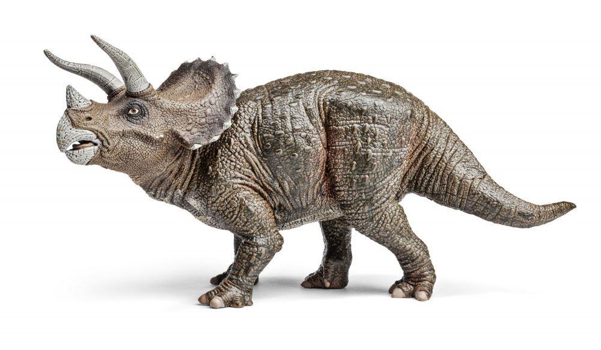

Dinosaurios Herbívoros
-

Triceratops
Con sus impresionantes cuernos, este dinosaurio es un ícono del período Cretácico.
-

Brontosaurio
Uno de los dinosaurios de cuello largo más conocidos, destacado por su tamaño masivo.